「アバターアワード2020」は、独創的な進化を続けるアバター文化の振興とクリエイターの社会的認知度向上を目的として、一般より広く3Dアバター作品を募集し、優れた作品を表彰するアワードです。
記念すべき第1回目の審査員には、人気ファッション誌の『ViVi』や『VOGUE GIRL』など数々の雑誌を手がけてきたファッション・クリエイティブ・ディレクターの軍地彩弓氏、角川スニーカー文庫『涼宮ハルヒ』シリーズの挿絵を担当するイラストレーターいとうのいぢ氏、電撃文庫『ソードアート・オンライン（SAO）』などのミリオンセラーを生み出した編集者として知られる三木一馬氏、そして人気アニメ『輪るピングドラム』や『さらざんまい』を手がけた幾原邦彦氏など、多様な分野の第一線で活躍するクリエイターが参画。
エントリー期間中（2020年11月9日～11月30日）に投稿された作品総数は411点に上り、そのうち最終ノミネートとして選出された12作品が、2020年12月13日（日）の「アバターアワード2020授賞式」生放送のバーチャルランウェイにてパフォーマンスを行いました。
審査員の間では、キャラクター性・ファッション性・先進性など、様々な観点で議論が交わされ、最優秀賞の選考においても意見が大きく割れました。
また、日本の独創的なアバターやバーチャルYouTuberなどの存在を一般にも広く知らしめ、アバター文化の発展に最も貢献したバーチャルキャラクターを表彰する「主催者特別功労賞」には、ネットだけでなくTVや誌面など様々なメディアに登場し、海外にも活動の場を広げている「キズナアイ」を選出しました。
第1回「アバターアワード2020」審査員
軍地 彩弓 様
（株）gumi-gumi 代表
三木 一馬 様
（株）ストレートエッジ 代表
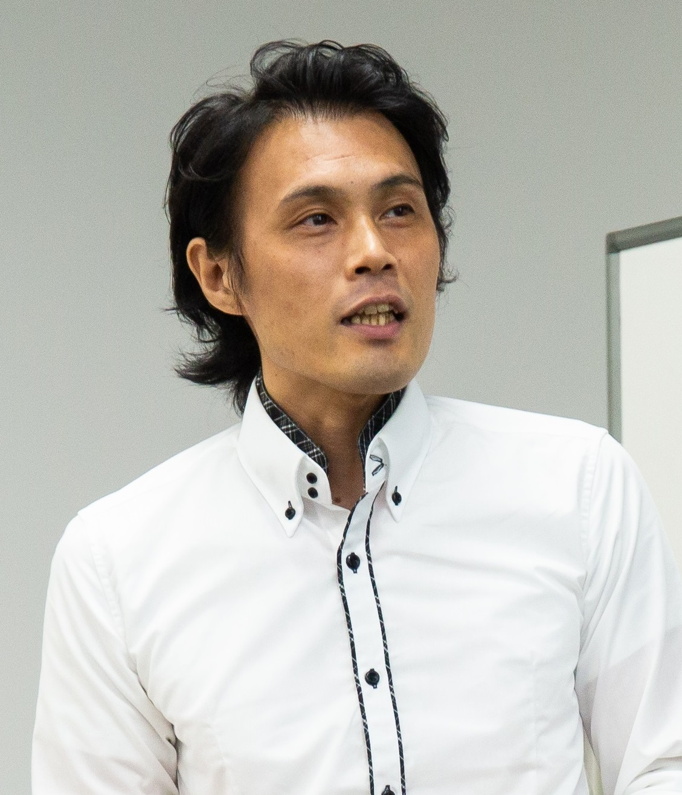
幾原 邦彦 様
（アニメ監督）
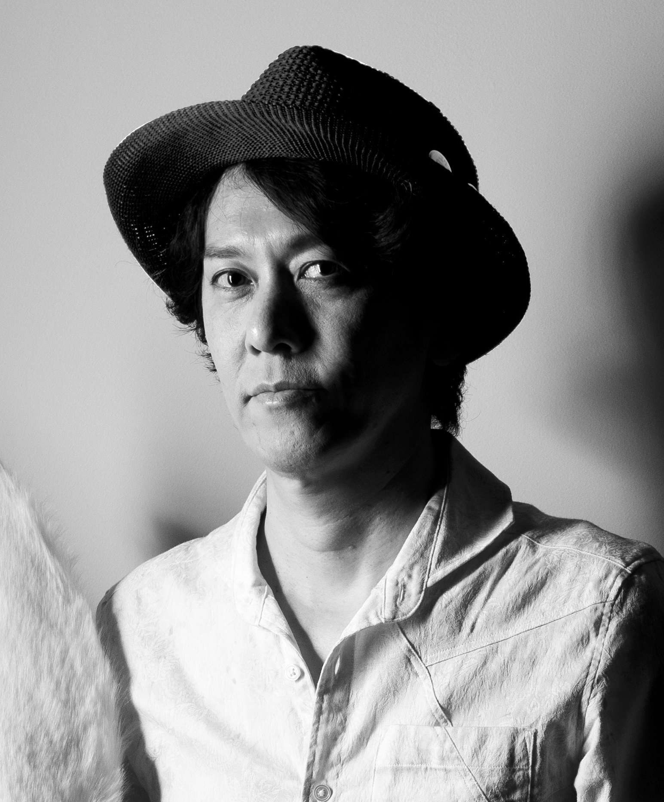
いとうのいぢ 様
（イラストレーター）
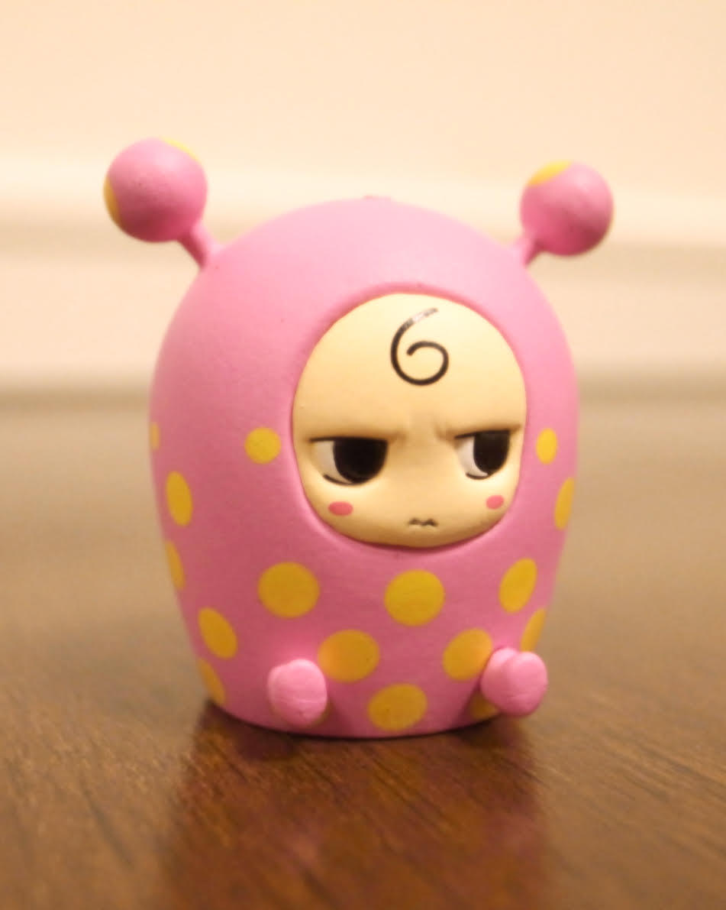
司会：吉田尚記 様
（ニッポン放送アナウンサー）
ゲスト：法元明菜 様
（声優）

第1回「アバターアワード2020」受賞結果一覧
■最優秀賞
・「藤ヶ峰りお」（作者：祥介氏）
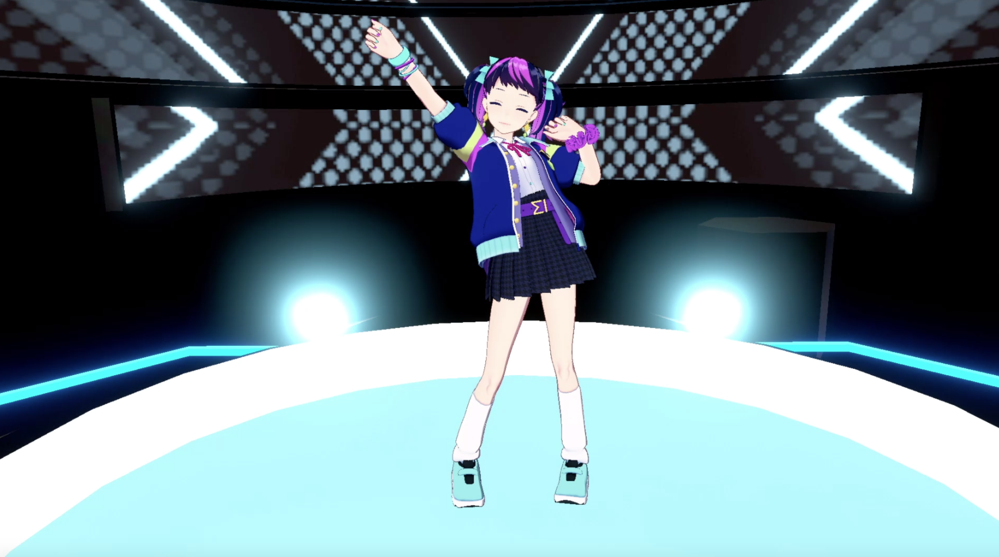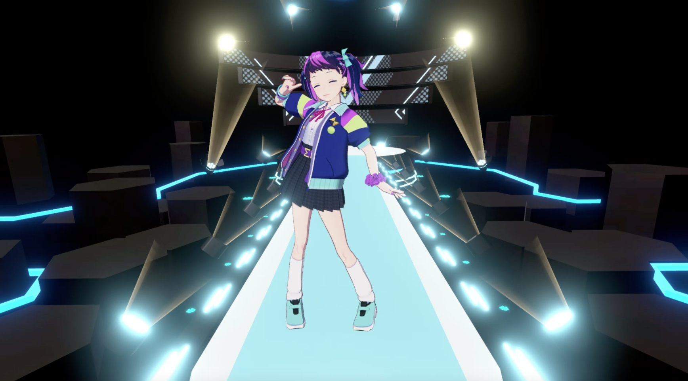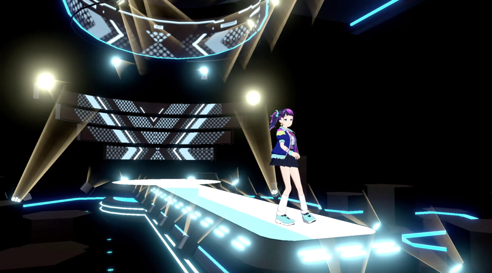
【審査員コメント】
候補作品の中でも色や表情に主張や力を感じました。（いとうのいぢ）
ランウェイをみると、アバターデザイン以上の躍動感と、実際にいそうな女の子の動きをしていて、人らしさを感じました。とくに、ランウェイ後半最後の後ろ姿の時もいぇいいぇい～！みたいに腕を振り上げているところとか、リアルで良かったです。（三木一馬）
■優秀賞
・「田中桔梗」（作者：田中桔梗（ききょうぱんだ）氏）
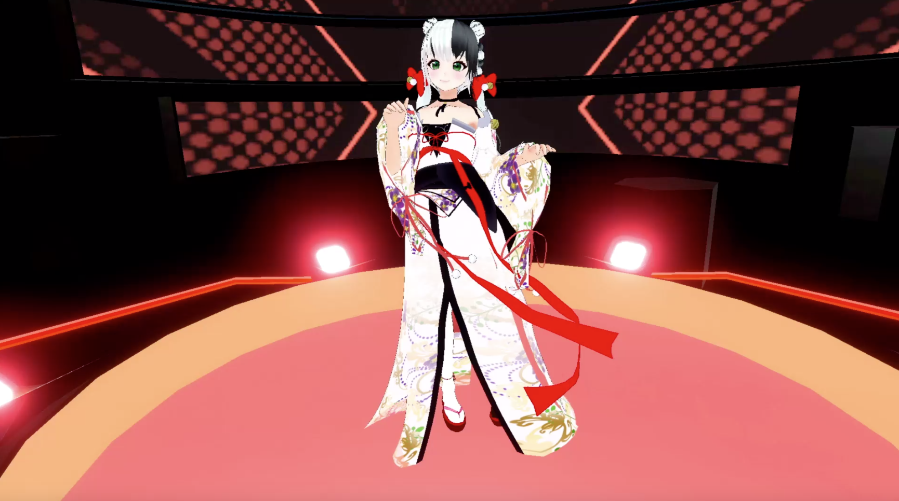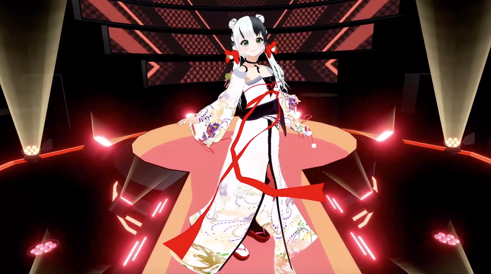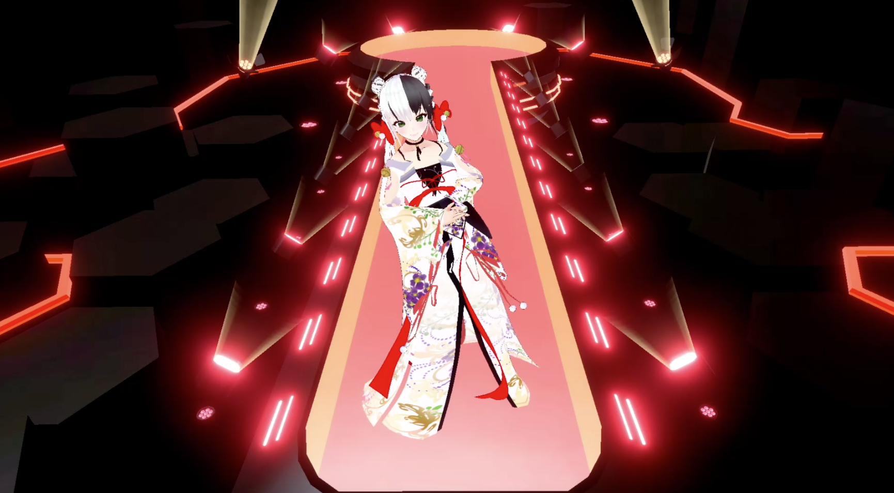
【審査員コメント】
着物ドレスがランウェイを歩くとき、トレーン（裾）や袖が美しく揺れてまるで本物のファッションショーを見ているようでした。ジョン・ガリアーノが2007年クリスチャン・ディオールで発表したキモノドレスを思わせます。個性と美意識が感じられる作品だと思います。（軍地）
・「チェルシー」（作：ぼたもち氏）
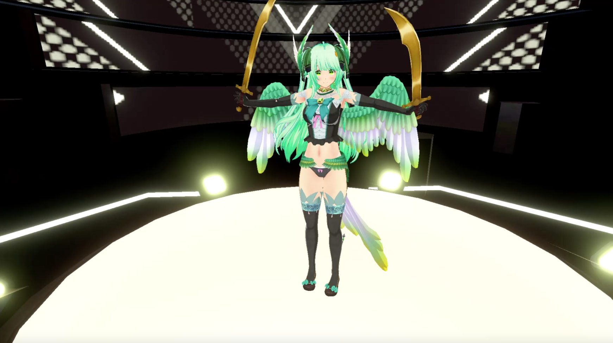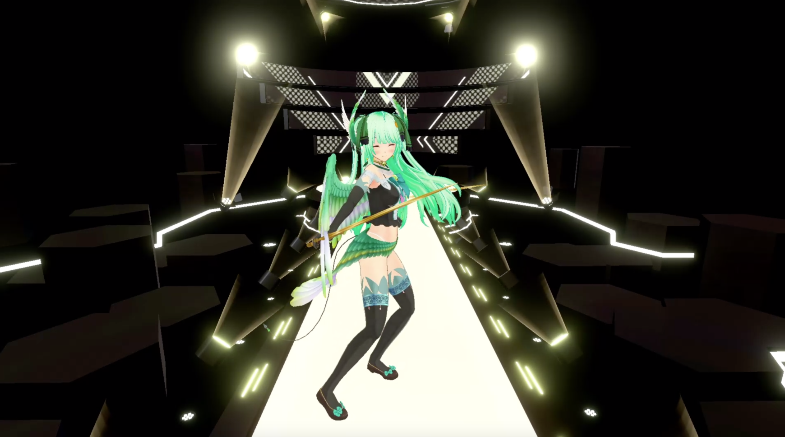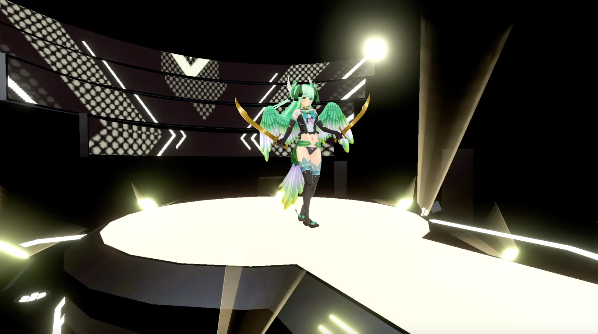
【審査員コメント】
・色彩と翼のシルエットに惹かれた。動くとゴージャスに見えて、そこもいい（幾原）
・「薄紅はるか」（作：みどりねこ氏）
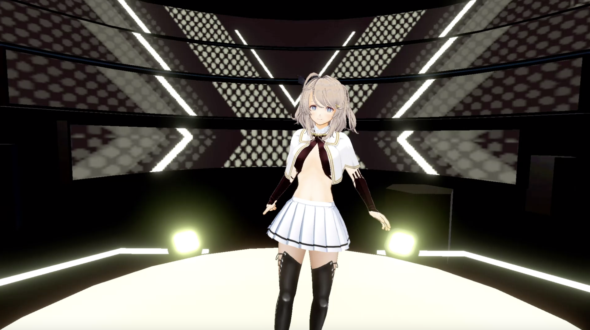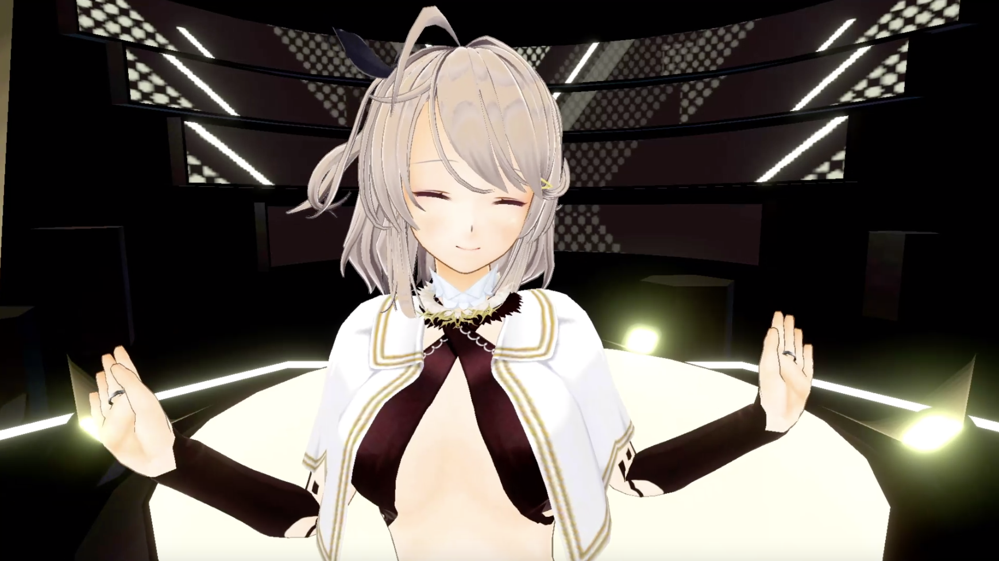
【審査員コメント】
儚くて淡い全体的な色彩がとても好みでした。（いとう）
このモデリングはすごいと思いました。というのも、淡い水彩よりのタッチで二次元イラスト調のキャラクターなのに、それを３Dモデルとして確立させているところです。他のエントリーキャラクターたちにはない個性を感じました。あと衣装がエロいからいいよね。けしからん。もっとやれ。（三木）
・「盃ないぎ」（作者：盃（さかずき）ないぎ氏）
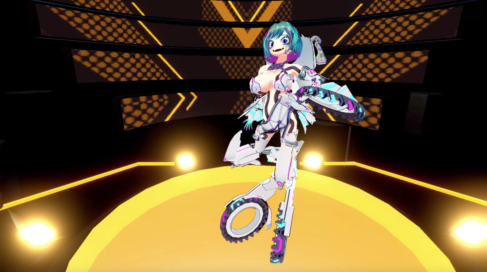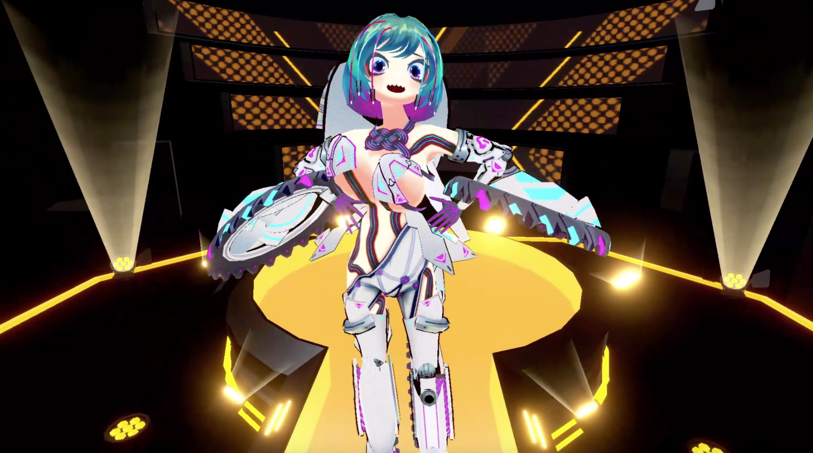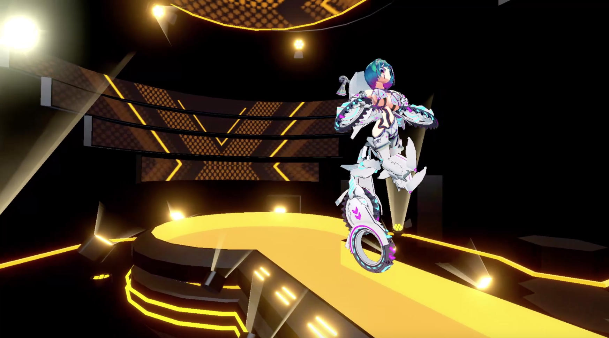
【審査員コメント】
身体性を超えて、ロボット、いや、スーパーヒューマン。これこそバーチャルファッションの魅力。ファッションはどうしても”身体”という制限を受けています。その枠を超えて、こういった自由でぶっとんだデザインが生まれることが今回のアワードの趣旨にも合っていると思います（軍地）
静止画では分からなかったが、動くと立体であることが際立つデザインであることに気がついた。他のバリエーションも見たいと思った（幾原）
■主催者特別功労賞
・「キズナアイ」
【本人受賞コメント】
「この度は特別功労賞という素敵な賞をいただき、とても嬉しいです！ありがとうございます！こういった賞をもらうと『みんなとつながりたい』という目標に向かって、たくさんのことにチャレンジをしたり、活動をし続けていることが少しでも皆さんに伝わっているんだなぁと実感できて、とても励みになっています。もっともっと世界中のみんなとつながっていき、私のビジョンのように大切にしている言葉"hello,world"を体現し、もっと皆さんの日常が彩られるように思いっきり未来志向で突き進んでいきたいと思います。この度は本当にありがとうございました！」
■最終ノミネート作品一覧
- 「千歳ゆうり」（作者：千歳ゆうり氏）
- 「惑星ちる」（作者：惑星（まどぼし）ちる氏）
- 「クロイニャン」（作者：クロイニャン氏）
- 「bluerose」（作者：ほにほに童子氏）
- 「紫鳥（Zǐ niǎo）」（作者：ダイゴ氏）
- 「猫面のタマ吉」（作者：猫面のタマ吉氏）
- 「ハスサブロー」（作者：tonoshake氏）
第１回「アバターアワード2020」 開催概要
■主催 ：一般社団法人VRMコンソーシアム
■実行委員長：大前広樹 (一般社団法人VRMコンソー1シアム 理事 渉外委員会委員長 /
ユニティ・テクノロジーズ・ジャパン 日本代表ディレクター)
■応募期間 ：2020年11月9日（月）～11月30日（月）
■授賞式 ：2020年12月13日（日）20:00～
YouTube：https://www.youtube.com/watch?v=GFA7698uhXs
ニコニコ生放送：https://live.nicovideo.jp/watch/lv329398214
ＶＲＭコンソーシアムについて
3Dアバター向けファイルフォーマット「VRM」の策定・普及を目的とした一般社団法人です。詳細につきましては以下のサイトをご覧ください。
ＶＲＭとは？
VR時代の3Dキャラクター・アバター使用を想定したプラットフォーム非依存のファイル形式です。
従来の3Dモデルとしてのテクスチャやボーンといった情報に加え、視線設定など一人称で操作するアバターに必要な情報を扱えるようにし、環境により異なるスケールや座標系などを統一することで、3Dアバターが配信・ゲームなどあらゆるプラットフォームで使用されることを想定しています。
また、人が操作して人格を演じるアバターの特性を考慮して、このアバターを他人が使用しても良いか、暴力表現をしても良いか、などアバター特有の権利までもファイルに埋め込むことが可能です。
将来的には3Dモデルの権利保護の機能を兼ね備え、アイテムやアバターの着せ替え販売を実現するなど3Dモデルが流通する際の標準フォーマットを目指していきます。
ＶＲＭの技術仕様につきましては以下のドキュメントをご覧ください。